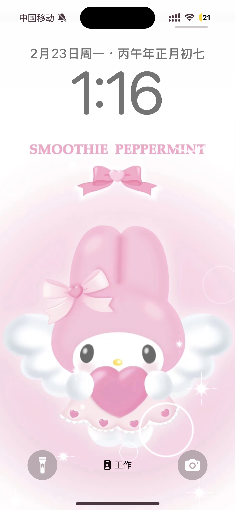
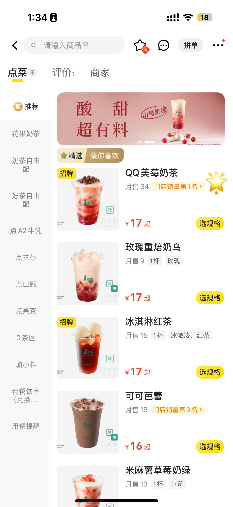
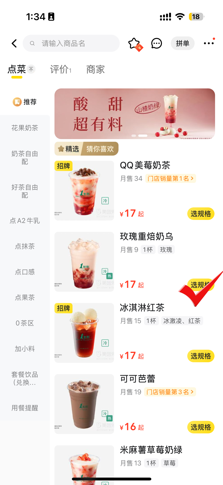

When you’re happy, feel free to explore something new.
But when you’re feeling low, comfort matters more than adventure.❤️
Choose something safe and guaranteed to taste good. 😊
│
│
│
│
│
│
│
│
│
│
│
│
│
│
│
│
▼
Step 1: Comfort Starting Number
Check the current minute on your phone.
For example, if the time is 13:16 → your starting number is 16.

Step 2: Stability Check
Divide the starting number by 5.
Only keep the remainder (the number left after division).
Example:
16 ÷ 5 = 3 remainder 1 → your number is 1.
This number is called the
“comfort number.”
Step 3: Choose From Safety Zone
Open the boba menu.
Go directly to the Recommended or Best Sellers section.
Count to the
comfort number within that section.
That drink becomes your safe choice.

Step 4: Final Fate Decision🌟
Now check the last digit of your phone’s battery percentage.
• If it’s odd
→ keep the safe choice exactly as it is.
• If it’s even
→ choose the drink directly above(if there is nothing above, then below) it in the same section.

That will be your destiny boba for today~ ✨🧋
⠀⠀⠀⠀⠀⠀⠀⠀⠀⠀⠀⠀⠀⠀⠀⠀⠀⠀⠀⠀⠀⠀⣀⡴⡖⢦⡀⠀⠀⠀⠀⠀⠀⠀⠀⠀⠀⠀⠀⠀⠀⠀⠀⠀⠀⠀⠀⠀⠀⠀⠀⠀⠀⠀⠀⠀⠀⠀⠀⠀⠀⠀⠀⠀⠀
⠀⠀⠀⠀⠀⠀⠀⠀⠀⠀⠀⠀⠀⠀⠀⠀⠀⠀⠀⢀⣠⠞⠉⢰⡧⠀⡧⠀⠀⠀⠀⠀⠀⠀⠀⠀⠀⠀⠀⠀⠀⠀⠀⠀⠀⠀⠀⠀⠀⠀⠀⠀⠀⠀⠀⠀⠀⠀⠀⠀⠀⠀⠀⠀⠀
⠀⠀⠀⠀⠀⠀⠀⠀⠀⠀⠀⠀⠀⠀⠀⠀⠀⣀⡴⠋⢀⡆⣤⣿⡳⠊⠁⠀⠀⠀⠀⠀⠀⠀⠀⠀⠀⠀⠀⠀⠀⠀⠀⠀⠀⠀⠀⠀⠀⠀⠀⠀⠀⠀⠀⠀⠀⠀⠀⠀⠀⠀⠀⠀⠀
⠀⠀⠀⠀⠀⠀⠀⠀⠀⠀⠀⠀⠀⠀⠀⣠⠞⠉⠀⢠⣼⣿⠿⠋⠀⠀⠀⠀⠀⠀⠀⠀⠀⠀⠀⠀⠀⠀⠀⠀⠀⠀⠀⠀⠀⠀⢀⣀⣀⣀⣀⡀⠀⠀⠀⠀⠀⠀⠀⠀⠀⠀⠀⠀⠀
⠀⠀⠀⠀⠀⠀⠀⠀⠀⠀⠀⠀⢀⡴⠋⠁⠀⣠⣶⣿⠟⠁⠀⠀⠀⢀⡆⠀⠀⠀⠀⠀⠀⠀⠀⠀⠀⠀⠀⠀⠀⠀⢀⣠⠖⠋⢁⣀⣀⣀⡀⠈⠓⢦⣄⡀⠀⠀⠀⠀⠀⠀⠀⠀⠀
⠀⠀⠀⠀⠀⠀⠀⠀⠀⠀⣠⠖⠋⠀⠀⣠⣾⡿⠋⠁⠀⠀⠀⠀⠀⠈⠀⠀⠀⠀⠀⠀⠀⠀⠀⠀⠀⠀⠀⠀⠀⣰⡟⣡⠔⠋⠁⠀⠀⠀⠉⠃⠀⠀⢹⡝⢆⠀⠀⠀⠀⠀⠀⠀⠀
⠀⠀⠀⠀⠀⠀⠀⣠⣶⣞⠁⠀⠀⣠⣾⠟⠉⠀⠀⠀⠀⠀⠀⠀⠀⠀⠀⠀⠀⠀⠀⠀⠀⠀⠀⠀⠀⠀⠀⠀⡼⠁⠈⠁⠀⠀⠀⠀⠀⠀⠀⠀⠀⠀⠀⢱⢸⣆⠀⠀⠀⠀⠀⠀⠀
⠀⠀⠀⠀⠀⠀⣾⣿⣷⡾⣯⣴⣶⡟⠁⠀⠀⠀⢀⡠⠖⠀⠀⠀⠀⠀⠀⠀⠀⠀⠀⠀⠀⠀⠀⠀⠀⠀⠀⣸⠁⠀⠀⠀⠀⠀⠀⠀⠀⠀⠀⠀⠀⠀⠀⢸⠈⣿⣧⠀⠀⠀⠀⠀⠀
⠀⠀⠀⠀⠀⢰⣿⣷⣬⣿⣿⣿⡏⠀⠀⠀⢀⡴⠋⠀⠀⠀⠀⠀⠀⠀⠀⠀⠀⠀⠀⠀⠀⠀⠀⠀⠀⠀⠀⣿⠀⠀⠀⠀⠀⠀⠀⠀⠀⠀⠀⠀⠀⠀⠀⡼⢀⡿⢻⠀⠀⠀⠀⠀⠀
⠀⠀⠀⠀⠀⣼⣶⣟⣛⣿⣿⣿⡇⣰⠎⠉⠉⠓⠒⠢⠤⣀⡤⣤⡀⠀⠀⠀⠀⠀⠀⠀⠀⠀⠀⠀⠀⠀⢠⣿⣧⡀⠀⠀⠀⠀⠀⠀⠀⠀⠀⠀⠀⢀⣼⢣⢋⠇⡞⡀⠀⠀⠀⠀⠀
⠀⠀⠀⠀⠀⢸⣿⠿⠛⠉⠙⣿⠀⡿⠀⠀⠀⠀⠀⠀⠀⠀⠀⠀⢹⡄⢀⣤⠶⡄⠀⠀⠀⠀⠀⠀⠀⠀⠀⢿⣿⡱⣄⠀⠀⠀⠀⠀⠀⠀⠀⠀⣠⡿⢡⣧⠞⡸⢡⠃⠀⠀⠀⠀⠀
⠀⠀⠀⠀⠀⠀⢿⣦⣄⠀⠀⠘⣿⠀⠀⠾⠆⠀⣀⠀⣀⡀⠀⠀⡞⠁⠀⠸⡖⠋⠀⠀⠀⠀⠀⠀⠀⠀⠀⠀⠹⣿⣦⣉⡐⠒⠲⠄⠀⣀⣠⠞⣉⣴⠿⢃⡼⣱⠃⠀⠀⠀⠀⠀⠀
⠀⠀⠀⠀⠀⠀⢸⣿⣄⠉⠒⠠⣼⣆⠀⠀⠀⠘⠛⠂⠛⠃⠀⢠⠃⠀⠀⣤⣿⡀⠀⠀⠀⠀⠀⠀⠀⠀⠀⠀⠀⠈⢿⣿⣿⣭⣉⣭⣭⣶⣻⠽⠛⣡⠴⠋⠘⠁⠀⠀⠀⠀⠀⠀⠀
⠀⠀⠀⠀⠀⠀⠀⠋⢿⣦⣶⠟⠉⠉⠙⠂⠀⠀⠀⠀⠀⢀⣠⠎⠀⠀⠀⠚⠉⠁⠀⠀⠀⠀⠀⠀⠀⠀⠀⠀⠀⠀⠀⠙⠿⠷⠭⠭⠭⠤⠴⠖⠋⠀⠀⠀⠀⠀⠀⠀⠀⠀⠀⠀⠀
⠀⠀⠀⠀⠀⠀⠀⢰⠈⢿⠛⣦⣀⠀⠀⠀⠀⠀⠀⠀⠀⠈⢻⠀⠀⠀⠀⠀⠀⠀⠀⠀⠀⠀⠀⠀⠀⠀⠀⠀⠀⠀⠀⠀⠀⠀⠀⠀⠀⠀⠀⠀⠀⠀⠀⠀⠀⠀⠀⠀⠀⠀⠀⠀⠀
⠀⠀⠀⠀⠀⠀⠀⠈⡇⠘⣷⡍⠛⠻⠶⣶⡄⠀⠀⠀⠀⠀⢘⠀⠀⠀⡀⠀⣀⣀⣀⡤⠤⠤⠤⠀⠒⠒⢒⣒⣲⠶⣶⠒⠂⠤⠤⣀⡀⠀⠀⠀⠀⠀⠀⠀⠀⠀⠀⠀⠀⠀⠀⠀⠀
⠀⠀⠀⠀⠀⠀⠀⠀⢳⠀⠘⣿⢶⣌⣠⣸⣷⠄⠀⠀⠀⠀⠰⠶⣖⠚⠉⠉⠁⠀⠀⠀⠀⠀⠀⠀⠀⠰⡏⠈⠉⢀⡼⣄⠀⠀⠀⠀⢹⡄⠀⠀⠀⠀⠀⠀⠀⠀⠀⠀⠀⠀⠀⠀⠀
⠀⠀⠀⠀⠀⠀⠀⠀⠀⡇⠀⠸⣟⠁⠀⠀⠀⠀⠀⠀⠀⠀⠀⠀⢸⠆⠀⠀⠀⠀⠀⠀⠀⠀⠀⠀⠀⠀⣟⠒⠒⣋⣤⣾⠆⠀⠀⣠⠟⢻⠀⠀⠀⠀⠀⠀⠀⠀⠀⠀⠀⠀⠀⠀⠀
⠀⠀⠀⠀⠀⠀⠀⠀⠀⣨⠴⠚⠻⣄⠀⠀⠀⠀⠀⠀⢀⣠⠴⠖⠋⠀⠀⠀⠀⠀⠀⠀⠀⠀⠀⠀⠀⠀⠛⠿⠿⠛⠋⢁⣠⠖⠋⢁⡄⣺⡀⠀⠀⠀⠀⠀⠀⠀⠀⠀⠀⠀⠀⠀⠀
⠀⠀⠀⠀⠀⠀⣠⠖⠉⠀⠀⠀⢰⣿⣿⣶⣞⣳⣿⡿⠉⠀⠀⠀⠀⠀⠀⠀⠀⠀⠀⠀⠀⠀⠀⠀⠀⠀⣀⣠⠤⠒⠋⠁⠀⢀⣤⣾⣾⠟⡿⣆⠀⠀⠀⠀⠀⠀⠀⠀⠀⠀⠀⠀⠀
⠀⠀⠀⠀⠀⡼⠱⣄⠀⠀⠀⠀⠀⠁⠈⠉⠉⠉⠀⠀⠀⠀⠀⠀⠀⠀⠀⠀⠀⠀⢀⣀⣀⡤⠴⠒⠋⠉⣁⠀⠀⠀⣉⣤⣴⣿⣟⠉⢻⣿⠃⢸⠆⠀⠀⠀⠀⠀⠀⠀⠀⠀⠀⠀⠀
⠀⠀⠀⠀⠀⢿⠦⢌⣓⣂⡀⠀⠀⠀⠀⠀⠀⢀⣀⣀⣀⣀⠀⠤⠤⠴⠖⠒⠊⠉⠉⠀⠀⠀⠀⠀⣀⣀⡤⠶⣾⠋⠙⣯⠀⠀⢻⣦⠞⢁⡴⠋⠀⠀⠀⠀⠀⠀⠀⠀⠀⠀⠀⠀⣀
⠀⠀⠀⠀⠀⠸⣄⠀⠀⠀⠉⠉⠉⠉⠉⠉⠉⠁⠀⠀⠀⠀⠀⠀⠀⠀⢀⣀⣀⣠⠤⢤⠶⠒⣿⠉⠉⢿⡄⠀⠹⣧⠀⠸⣧⣴⣛⡡⠞⠉⡇⠀⠀⠀⠀⠀⠀⠀⠀⠀⠀⠀⢀⡞⠁
⠀⠀⠀⠀⠀⢠⣿⠙⡖⠲⣦⠤⣤⠤⢤⡤⠤⢤⡤⠶⢶⡖⠒⣶⠋⠙⣯⠁⠘⣧⠀⠸⣧⠀⢻⣇⠀⠈⣿⡀⣀⣿⣶⠛⣿⠋⠉⡆⠀⠀⡇⠀⠀⠀⠀⠀⠀⠀⠀⠀⠀⠀⠘⣆⣀
⠀⠀⠀⠀⠀⢸⣿⣼⡇⢰⣿⢀⣿⠀⢸⣷⠀⢸⣧⠀⠸⣧⠀⢹⡄⠀⢹⡆⠀⢹⣄⣀⣿⣄⣠⣿⣶⣿⣿⣯⣩⠵⠃⢠⠇⠀⠀⡇⠀⠀⡇⠀⠀⠀⠀⠀⠀⠀⠀⠀⠀⠀⠀⠈⠚
⠀⠀⠀⠀⠀⠀⠉⠛⠦⣼⣧⡴⣿⣄⣼⣿⣰⣾⣿⣤⣤⣿⣤⣼⠷⠖⢿⣿⣷⣿⣿⣿⣿⡏⠁⣿⣏⣿⡈⠳⡄⠀⡖⣾⠾⢷⡴⣷⠀⠀⢦⠀⠀⠀⠀⠀⠀⠀⠀⠀⠀⠀⠀⠀⠀
⠀⠀⠀⠀⠀⠀⠀⠀⠀⠸⡄⠀⠸⣿⣏⠉⠉⢙⣿⣿⠋⠈⢹⠇⠀⠀⠀⠙⣆⠙⢿⣿⣿⠃⢸⠉⣿⣿⣇⣤⠟⠀⣛⣫⣴⡟⡟⢻⠀⠀⢸⠀⠀⠀⠀⠴⢦⡀⠀⠀⠀⠀⠀⠀⠀
⠀⠀⠀⠀⠀⠀⠀⠀⠀⠀⢳⡀⠀⢹⣿⡄⠀⣸⡟⠁⣤⣤⡸⢦⣦⣤⡤⠾⠋⣀⣀⡚⠇⠀⠘⠓⢛⣉⣥⣶⠖⠛⠛⢩⣄⡇⢹⢸⠀⠀⢸⠀⠀⠀⠀⣄⠀⠹⠂⠀⠀⠀⠀⠀⠀
⠀⠀⠀⠀⠀⠀⠀⠀⠀⠀⠀⢧⠀⠀⢻⣿⣾⡟⠀⣼⠃⡈⣿⡄⠐⠀⣀⡀⢰⣿⣿⠟⠀⠀⢀⣠⣼⣿⣿⠁⠀⣤⠀⠈⠁⢇⠸⣿⡆⠀⢸⡆⠀⠀⠀⠀⠀⠀⠀⠀⠀⠀⠀⠀⠀
⠀⠀⠀⠀⠀⠀⠀⠀⠀⠀⠀⠘⣆⠀⠈⣇⢿⠀⠀⣿⣀⣿⡿⠏⠈⠉⢁⣿⣿⢶⣂⣀⣸⣿⠏⠁⠀⣿⣿⡄⢠⣿⡆⠀⠀⢸⠸⣿⡇⠀⠈⡇⠀⠀⠀⠀⠀⠀⠀⠀⠀⠀⠀⠀⠀
⠀⠀⠀⠀⠀⠀⠀⠀⠀⠀⠀⠀⠸⡄⠀⠘⡾⣷⣦⣌⣿⣷⣶⣦⣶⣶⡿⠛⠁⢠⣽⣿⠿⣿⣶⠄⢠⣹⣭⡧⠴⠿⠶⠶⠶⢾⠤⠟⢇⠀⠀⣇⠀⠀⠀⠀⠀⠀⠀⠀⠀⠀⠀⠀⠀
⠀⠀⠀⠀⠀⠀⠀⡀⠀⢠⣄⠀⠀⢷⡀⠀⢹⡘⣷⡀⠀⢸⣿⡗⠀⣀⣀⣀⠉⠿⠿⢋⣤⢼⡇⣠⠖⠋⠁⠀⠀⠀⠀⠀⠀⢸⠀⢀⣸⠀⠀⣿⠀⠀⠀⠀⠀⠀⠀⠀⠀⠀⠀⠀⠀
⠀⠀⠀⠀⠀⢰⡋⠹⡀⢀⢸⡇⠀⠀⢧⠀⠀⢳⣿⣿⡆⢹⣿⣧⣿⣿⣿⣽⠇⠸⣷⣼⣿⡾⠋⠁⠀⠀⣠⣴⠶⠟⠛⠛⠓⢺⠆⢚⢻⠀⠀⢸⠀⠀⠀⠀⠀⠀⠀⠀⠀⠀⠀⠀⠀
⠀⠀⠀⣴⠳⣄⠱⣤⣇⢸⣾⠁⢀⡤⠼⣆⠀⠈⣿⣿⣿⡏⠉⠉⠉⠉⠉⠉⠉⠉⠉⠉⠁⠀⠀⢀⣠⠞⢻⠹⠀⢀⣀⣀⣀⣀⣳⡷⠾⡆⠀⢸⠀⠀⠀⠀⠀⠀⠀⠀⠀⠀⠀⠀⠀
⠀⠀⠀⠈⠑⢾⣷⡾⠟⢈⡥⠔⠚⠀⠀⠘⡄⠀⠘⣿⣿⣿⣦⠴⠖⠲⠶⠦⣤⣄⣀⣀⣤⠴⠖⠋⠁⢀⡼⠞⠋⠉⠀⠀⠀⠀⠀⠀⠀⡇⠀⠸⡆⠀⠀⠀⠀⠀⠀⠀⠀⠀⠀⠀⠀
⠀⠀⠀⠀⠀⢀⡼⠶⠟⠁⠀⠀⠀⠀⠀⠀⠙⢦⡀⢹⡿⣿⣿⣧⣀⣀⠀⠀⠀⠀⠀⠀⠀⠀⣀⡴⠚⠁⠀⠀⠀⠀⠀⠀⠀⠀⠀⠀⠀⣧⠀⠀⡇⠀⠀⠀⠀⠀⠀⠀⠀⠀⠀⠀⠀
⠀⠀⠀⠀⠀⣞⠀⠀⠀⠀⠀⠀⠀⠀⣤⣄⠀⠀⢳⠀⢻⠛⠉⠀⠀⣈⠉⠉⠓⠒⠒⠒⢛⡉⠁⠀⠀⠀⠀⠀⠀⠀⠀⢀⣠⠤⣤⡀⢀⣿⠀⠀⡇⠀⠀⠀⠀⠀⠀⠀⠀⠀⠀⠀⠀
⠀⠀⠀⠀⠀⠘⢲⠀⠀⢀⣀⠀⢠⣤⡌⠀⠀⢠⣯⠀⠈⢧⠁⠀⠀⠈⢦⡀⠀⠀⠀⡰⠃⣠⣶⠶⠶⡄⠀⠀⠀⠀⢀⡾⠅⠀⠀⠉⠉⢸⠀⠀⣇⠀⠀⠀⠀⠀⠀⠀⠀⠀⠀⠀⠀
⠀⠀⠀⠀⠀⠀⠘⣆⠀⠈⠋⠀⠈⠁⠀⠀⠀⠀⠈⠉⠓⠺⠿⣿⣍⠳⣆⠙⢆⠀⡜⠁⣼⠟⠀⠀⠀⠿⡄⠀⠀⢀⡾⠀⠀⢀⣠⣄⡀⢸⡄⠀⢹⠀⠀⠀⠀⠀⠀⠀⠀⠀⠀⠀⠀
⠀⠀⠀⠀⠀⠀⠀⠈⠢⢄⣀⣠⡤⠆⠀⠀⠠⣀⠀⠀⠀⠀⠀⠈⢻⣤⠈⠳⣄⠋⣠⡾⢏⣴⣶⢤⡀⡀⠙⠳⡴⠛⠀⠀⠀⣿⣤⣦⡷⠈⡇⠀⢸⠀⠀⠀⠀⠀⠀⠀⠀⠀⠀⠀⠀
⠀⠀⠀⠀⠀⠀⠀⠀⠀⠀⠀⠘⢷⡀⠀⠀⠀⠀⠑⠢⣄⡀⠀⣠⣼⣿⠀⠀⠈⠉⠉⠀⢸⣿⣿⣿⡗⠃⠀⠀⡆⢀⣤⠤⣄⠈⠙⠋⠁⢸⡇⠀⢸⡆⠀⠀⠀⠀⠀⠀⠀⠀⠀⠀⠀
⠀⠀⠀⠀⠀⠀⠀⠀⠀⠀⠀⠀⠀⠳⡀⠀⠀⠀⠀⠀⠀⠉⢻⣍⣏⠙⣦⣶⣿⣿⢳⣄⠀⠉⠋⠉⠀⠀⠀⠀⢰⣿⣬⣷⣼⡇⠀⠀⠀⠸⣷⡀⢸⡇⠀⠀⠀⠀⠀⠀⠀⠀⠀⠀⠀
⠀⠀⠀⠀⠀⠀⠀⠀⠀⠀⠀⠀⠀⠀⣹⠂⠀⠀⠀⠀⠀⠀⠀⠀⣸⣆⢻⣿⣿⣿⣿⡿⢠⣶⣶⠶⣄⠀⠀⠀⠀⠻⢿⣿⠿⠁⠀⠀⠀⢀⡿⠉⢲⡇⠀⠀⠀⠀⠀⠀⠀⠀⠀⠀⠀
⢀⣠⣤⣄⡀⠀⠀⠀⠀⠀⠀⠀⣠⠴⠃⠀⠀⠀⠀⠀⠀⣠⠶⡖⢩⠿⡄⠙⠻⠿⠟⠱⣿⣷⣼⣷⣻⠆⠀⡂⠀⠀⠀⠀⠀⠀⢀⣠⠴⠋⠀⠀⣸⠃⠀⠀⢀⡠⠤⢤⣀⠀⠀⠀⠀
⣯⡄⠈⠀⠹⡆⠀⠀⠀⠀⠀⠀⡇⠀⠀⠀⠀⠀⣀⡴⠚⠁⠀⢳⡃⠀⢳⣀⠀⠀⠙⢦⡙⢿⣿⡿⠟⠀⠀⠁⠀⣀⣀⡤⠔⠚⠉⠀⠀⠀⣠⠞⠁⠀⢠⠞⢁⣀⠀⣀⡈⠳⠀⠀⠀
⣿⣿⣶⣶⣿⠇⠀⠀⠀⠀⠀⠀⠉⠲⢄⣀⠴⠋⠁⠀⠀⠀⠈⠛⢧⡀⠀⠈⠉⠓⠒⠒⠚⠓⠒⠒⠒⠒⠋⠉⠉⠀⠀⠀⠀⠀⣀⣠⠴⠋⠁⠀⠀⠀⡏⠀⠘⢻⣶⡍⠃⠀⠀⠀⠀
⠈⠛⠛⠋⠁⠀⠀⠀⠀⠀⠀⠀⠀⠈⠉⠓⠒⠒⠒⠒⠒⠀⠘⢄⡀⠉⠓⠦⠤⣀⣀⣀⠀⠀⠀⠀⠀⢀⣀⣀⣀⡤⠤⠶⠒⠉⠁⠀⠀⠀⠀⠀⠀⠠⢷⡀⠸⡦⠙⢿⠇⠀⠀⠀⠀
⠀⠀⠀⠀⠀⠀⠀⠀⠀⠀⠀⠀⠀⠀⠀⠀⠀⠀⠀⠀⠀⠀⠀⠀⠉⠁⠀⠀⠀⠀⠀⠈⠉⠉⠉⠉⠉⠉⠀⠀⠀⠀⠀⠀⠀⠀⠀⠀⠀⠀⠀⠀⠀⠀⠀⠑⠀⠀⠀⠀⠀⠀⠀⠀⠀⠀⠀⠀⠀⠀⠀⠀⠀⠀